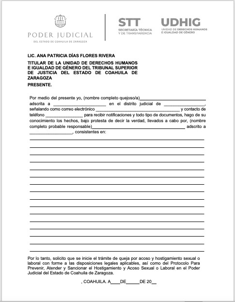
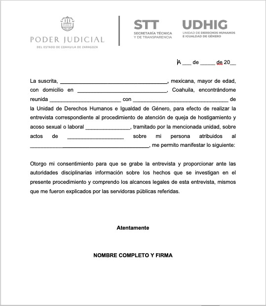

Key: AC20220531B
Capítulo I
Disposiciones generales
Artículo 1. El presente protocolo tiene por objeto regular las medidas para prevenir, atender y sancionar el hostigamiento y acoso sexual o laboral en el Poder Judicial del Estado de Coahuila de Zaragoza.
Es de observancia obligatoria y transversal para todo el personal adscrito a los órganos jurisdiccionales, no jurisdiccionales y administrativos, sin perjuicio de lo que dispongan las leyes en materia laboral, administrativa y penal en estas asignaturas.
Artículo 2. Para la aplicación de este protocolo se observará lo dispuesto en la Ley Orgánica del Poder Judicial del Estado de Coahuila de Zaragoza, los acuerdos y reglamentos emitidos por el Consejo de la Judicatura del Estado, el Manual para la tramitación de procedimientos disciplinarios por parte de personas magistradas y juezas del Poder Judicial del Estado de Coahuila de Zaragoza, el Protocolo para la atención de casos de hostigamiento y acoso sexual del Gobierno del Estado de Coahuila de Zaragoza, la Ley de Acceso de las Mujeres a una Vida Libre de Violencia para el Estado de Coahuila de Zaragoza, la Ley General de Acceso de las Mujeres a una Vida Libre de Violencia, el marco normativo nacional e internacional en la materia, y las demás disposiciones legales conducentes.
Asimismo, se observarán los principios de no revictimización, confidencialidad, imparcialidad y debido proceso.
Las normas establecidas en este protocolo se interpretarán de forma sistemática y evolutiva, con perspectiva de derechos humanos, de género y de interseccionalidad.
Lo no previsto en el presente protocolo será resuelto por el Consejo de la Judicatura del Estado de Coahuila de Zaragoza, la Unidad de Derechos Humanos e Igualdad de Género, y las autoridades encargadas de su aplicación, en el ámbito de sus respectivas competencias.
Artículo 3. Además de lo dispuesto en el artículo primero de este protocolo, son objetivos de este instrumento los siguientes:
I. Promover un ambiente libre de violencia y un trabajo decente al interior del Poder Judicial del Estado, el cual se desarrolle siempre bajo condiciones de igualdad y no discriminación.
II. Contribuir a garantizar lo dispuesto en la Ley General de Acceso de las Mujeres a una Vida Libre de Violencia y la Ley de Acceso de las Mujeres a una Vida Libre de Violencia para el Estado de Coahuila de Zaragoza.
III. Promover el respeto, protección y el ejercicio efectivo de los derechos de las personas trabajadoras del Poder Judicial del Estado, en el desempeño de su empleo, cargo, comisión o cualquier función que tengan.
IV. Establecer una guía especializada que permita brindar orientación, acompañamiento y atención integral a las presuntas víctimas de hostigamiento y acoso sexual o laboral en el Poder Judicial del Estado de Coahuila de Zaragoza.
V. Lograr la coordinación permanente entre las instancias internas del Poder Judicial para la prevención, atención y sanción del hostigamiento y el acoso sexual o laboral.
VI. Establecer las bases para generar datos estadísticos con el fin de contar con diagnósticos e información que permitan diseñar e implementar políticas públicas enfocadas en la prevención, atención y sanción de la violencia de género en el Poder Judicial del Estado de Coahuila de Zaragoza.
Artículo 4. Toda la información que se obtenga, genere o resguarde con motivo de la aplicación del presente Protocolo, estará́ sujeta a lo establecido en las disposiciones de acceso a la información pública y protección de datos personales. En todos los casos se va a privilegiar la estricta confidencialidad de la misma, salvo para los fines estadísticos y de análisis, asegurando en todo momento la omisión de los datos personales.
Los datos personales de las presuntas víctimas por hostigamiento y acoso sexual o laboral tendrán el carácter de información confidencial para evitar que se agrave su condición o su revictimización por este tipo de conductas, así́ como los de las demás partes involucradas, en tanto no se emita una resolución y esta quede firme, respetando el principio de presunción de inocencia.
Artículo 5. Para los efectos de este protocolo se entenderá por:
I. Acoso laboral: Forma de violencia en el ámbito laboral que puede consistir en un solo evento dañino o en una serie de eventos que tiene como objetivo intimidar, excluir, opacar, aplanar, amedrentar o consumir emocionalmente o intelectualmente a la víctima, causando un daño físico, psicológico, económico y laboral-profesional. Puede ocurrir en el centro de trabajo o fuera de éste siempre que esté vinculado a la relación laboral.
II. Acoso sexual: Forma de violencia en el ámbito laboral en la que, si bien no existe subordinación, hay un ejercicio abusivo de poder que conlleva a un estado de indefensión y de riesgos para la víctima, independientemente de que se realice en uno o varios eventos.
III. Ambiente laboral sano, en condiciones de igualdad, libre de violencia y discriminación: Es aquel que permite y propicia las actividades profesionales de la o el servidor público en un estado psicológico y emocional sano, respetando su dignidad e integridad personal.
IV. Cero tolerancia: Es la postura de las autoridades que, de forma contundente, señala la no permisibilidad bajo ninguna circunstancia de conductas de hostigamiento y acoso sexual o laboral.
V. Confidencialidad: Es un principio que garantiza que la información personal será protegida para que no sea divulgada sin consentimiento de su titular.
VI. Consejo de la Judicatura: Consejo de la Judicatura del Estado de Coahuila de Zaragoza.
VII. Debido proceso: Es un derecho fundamental y un principio que garantiza una adecuada y oportuna defensa respetándose en todo tiempo las formalidades esenciales del procedimiento.
VIII. Género: Se refiere a las identidades, las funciones y los atributos construidos socialmente de las mujeres y de los hombres y al significado social y cultural que se atribuye a esas diferencias biológicas.
IX. Hostigamiento laboral: Forma de violencia que ocurre de forma vertical en una relación de subordinación que puede consistir en un solo evento dañino o en una serie de eventos cuyo objetivo es intimidar, excluir, opacar, aplanar, amedrentar o consumir emocionalmente o intelectualmente a la víctima, causando un daño físico, psicológico, económico y laboral-profesional. Puede ocurrir en el centro de trabajo o fuera de éste siempre que esté vinculado a la relación laboral.
X. Hostigamiento sexual: Forma de violencia que consiste en ejercer poder en una relación de subordinación real de la víctima frente al agresor en el ámbito laboral, y se manifiesta por medio de expresiones verbales, corporales o conductas físicas de connotación lasciva hacia la víctima.
XI. Igualdad de género: Se entiende por la existencia de una igualdad de oportunidades y de derechos entre las mujeres y los hombres, las niñas y los niños, en su esfera privada y pública, garantizándoles la posibilidad de desarrollar la vida que deseen y conforme a sus necesidades y prioridades.
XII. Instituto de Especialización Judicial: El Instituto de Especialización Judicial del Poder Judicial del Estado de Coahuila de Zaragoza.
XIII. Jurisdicción disciplinaria: Aquella que ejercen las autoridades disciplinarias del Poder Judicial conforme al artículo 199 de la Ley Orgánica del Poder Judicial del Estado de Coahuila de Zaragoza. Esta jurisdicción se ejerce por queja, denuncia o de oficio, y se tramita por las autoridades a través de un procedimiento administrativo disciplinario en forma de juicio que tiene por objeto sancionar, en su caso, a las personas servidoras públicas del Poder Judicial que cometan las faltas administrativas establecidas en la ley orgánica. Se ejerce garantizando en todo tiempo el debido proceso y la presunción de inocencia.
Esta jurisdicción disciplinaria tiene finalidades distintas a las jurisdicciones penal, civil y laboral, etcétera.
XIV. Oficialía Mayor: La Oficialía Mayor del Poder Judicial del Estado de Coahuila de Zaragoza.
XV. Perspectiva de género: Es la visión social, científica, analítica y política sobre las mujeres y hombres, que permite visibilizar la asignación diferenciada de roles y tareas en razón de su sexo, y que busca eliminar las causas de la opresión, como la desigualdad, la injusticia y la jerarquización de las personas en razón del género.
XVI. Poder Judicial: El Poder Judicial del Estado de Coahuila de Zaragoza.
XVII. Presunta víctima: Es aquella persona que desempeña un empleo, cargo, comisión o cualquier función en el Poder Judicial del Estado de Coahuila de Zaragoza, y que presuntamente ha sido afectada directa o indirectamente en su esfera jurídica al ser objeto de posible hostigamiento y acoso sexual o laboral.
XVIII. Secretaría Técnica y de Transparencia: La Secretaría Técnica y de Transparencia de la Presidencia del Tribunal Superior de Justicia del Estado de Coahuila de Zaragoza.
XIX. Sensibilización: Es un proceso o mecanismo por medio del cual la autoridad transmite cierta información a una o más personas con la finalidad de concientizar e influir para que recapacite sobre su conducta y perciba el valor o la importancia de algo.
XX. Unidad: La Unidad de Derechos Humanos e Igualdad de Género, que forma parte de la Secretaría Técnica y de Transparencia de la Presidencia del Tribunal Superior de Justicia del Estado de Coahuila de Zaragoza.
XXI. Violencia laboral: Se ejerce por las personas que tienen un vínculo laboral con la víctima, independientemente de la relación jerárquica, consistente en un acto o una omisión en abuso de poder que daña la autoestima, salud, integridad, libertad y seguridad de la víctima, e impide su desarrollo y atenta contra su dignidad.
Constituye violencia laboral, la negativa ilegal a contratar a la víctima o a respetar su permanencia o condiciones generales de trabajo; la descalificación del trabajo realizado, las amenazas, la intimidación, las humillaciones, los amedrentamientos, la explotación y todo tipo de discriminación por condición de género; además de exigir como requisito para el ingreso o ascenso a un empleo la presentación de certificado médico de no embarazo
XXII. Visitaduría Judicial: La Visitaduría Judicial General del Poder Judicial del Estado de Coahuila de Zaragoza.
Capítulo II.
Acciones de prevención
Artículo 6. Todas las autoridades y personal que forman parte del Poder Judicial, en el ámbito de sus respectivas competencias, deberán realizar las acciones para prevenir el hostigamiento y el acoso sexual o laboral en los centros de trabajo, garantizar un ambiente libre de violencia.
Las personas titulares de los órganos del Poder Judicial deberán dirigir las relaciones de trabajo con perspectiva de derechos humanos, de género y de interseccionalidad.
La Oficialía Mayor deberá proporcionar los recursos necesarios, conforme a la disponibilidad presupuestal, para implementar de forma transversal las acciones de prevención que se refieren en el presente protocolo.
La Unidad será la autoridad encargada de implementar la política de Cero tolerancia de la violencia laboral conforme al presente protocolo. Deberá implementarla en todas sus actividades de forma transversal.
Artículo 7. El Instituto de Especialización Judicial, en coordinación con la Unidad, implementará programas de sensibilización, concientización y capacitación, continuos y permanentes dentro del Poder Judicial en materias de violencia laboral, así como del hostigamiento y acoso sexual o laboral. Todo el personal adscrito al Poder Judicial deberá participar en estos programas, para lo cual se implementarán horarios flexibles, privilegiando que se puedan impartir en horarios laborales y de acuerdo al calendario que para tal efecto establezcan.
Para tales efectos, se podrán celebrar convenios de colaboración con instituciones académicas y autoridades, tanto locales, nacionales e internacionales en la materia.
Todas las personas servidoras públicas deberán participar en los programas de sensibilización, concientización y capacitación.
El Instituto de Especialización Judicial y la Unidad implementarán los programas en horarios flexibles para el personal judicial, privilegiando que se puedan impartir en horarios laborales.
Artículo 8. La Unidad implementará campañas de promoción y difusión sobre ambientes libres de violencia y los derechos que les asisten a todas las personas trabajadoras en estas asignaturas.
La Unidad deberá incorporar en sus planes anuales de trabajo estas campañas, precisando en todo tiempo los objetivos que se persiguen y las acciones específicas. Todas las autoridades del Poder Judicial deberán colaborar con la Unidad.
Asimismo, la Unidad deberá proporcionar, en su micrositio otorgado en el sitio web oficial del Poder Judicial, información accesible, clara, completa y actualizada sobre la violencia laboral, así como sobre los mecanismos que el Poder Judicial tiene para prevenirla, atenderla y sancionarla. Esta información deberá actualizarse constantemente.
Artículo 9. La Unidad, y la Secretaría Técnica y de Transparencia, deberán realizar estudios y diagnósticos para conocer el estado del arte correspondiente al ambiente laboral que existe en los órganos del Poder Judicial, a fin de elaborar políticas públicas transversales para prevenir la violencia laboral.
Asimismo, deberá generar información y estadísticas conforme a los estándares nacionales e internacionales.
Todas las autoridades del Poder Judicial deberán colaborar con la Unidad y la Secretaría para estas acciones de prevención.
Artículo 10. El Consejo de la Judicatura deberá informar a la Unidad mensualmente sobre los resultados de los procedimientos administrativos disciplinarios que se tramiten por violencia laboral, de acuerdo al procedimiento previsto en el Capítulo IV del presente protocolo, respetando en todo tiempo las garantías que integran la confidencialidad y los derechos del debido proceso y la presunción de inocencia.
Inmediatamente después de cada periodo de visitas judiciales e inspecciones administrativas, la Visitaduría Judicial deberá informar a la Unidad sobre las quejas y denuncias que se presenten por violencia laboral en el Poder Judicial, sin perjuicio de su deber de comunicarlo al Consejo de la Judicatura.
Tanto el Consejo de la Judicatura y la Visitaduría Judicial deberán generar estadística sobre los casos que, en sus respectivas competencias, conozcan sobre violencia laboral remitiéndola a la Secretaría Técnica y de Transparencia a fin de que se integre en los estudios y diagnósticos a que refiere el artículo anterior.
Artículo 11. El Consejo de la Judicatura implementará mecanismos para incorporar indicadores de evaluación de violencia laboral en los procedimientos de reelección de jueces y magistrados.
Artículo 12. La Unidad, el Instituto de Especialización Judicial y la Secretaría Técnica y de Transparencia, promoverán foros de discusión interdisciplinarios sobre la violencia laboral en los que participe personal del Poder Judicial a fin de dialogar y debatir sobre este fenómeno, así como compartir experiencias y buenas prácticas para su prevención y erradicación.
Artículo 13. El Instituto de Especialización Judicial incorporará temas sobre la violencia laboral en las actividades académicas que implemente para el personal del Poder Judicial del Estado.
De igual manera, introducirá los temas relativos a la violencia laboral en los exámenes de méritos que se implementen en el Poder Judicial, independientemente del cargo y las materias sobre los que versen.
Artículo 14. El Consejo de la Judicatura deberá comunicar a la Unidad las resoluciones definitivas, que hayan causado ejecutoria, que se emitan en los procedimientos disciplinarios de su conocimiento cuando se trate de faltas administrativas sobre violencia laboral.
La Unidad deberá promover la discusión y la promoción de tales resoluciones, así como de aquellas que constituyan precedentes importantes emitidos por tribunales locales, nacionales e internacionales, respetando la confidencialidad y la protección de los datos personales de las personas involucradas. La discusión y promoción versarán sobre los criterios jurídicos que emita el Consejo de la Judicatura en su doctrina disciplinaria.
Capítulo III.
Acciones de atención
Artículo 15. Las y los titulares de todos los órganos jurisdiccionales, no jurisdiccionales y administrativos del Poder Judicial al momento de recibir una queja que versen sobre dichas conductas por parte del personal a su cargo, deberán hacerlo del conocimiento a la Unidad para su atención correspondiente conforme a este Protocolo.
Todas autoridades deben buscar proteger a la presunta víctima de violencia y garantizar su atención y asesoramiento integral, velando siempre por no revictimizarla.
Artículo 16. Corresponderá al Consejo de la Judicatura:
I. En caso de recibir quejas de manera directa o que el personal adscrito a este órgano tenga conocimiento de actos que representen conductas de hostigamiento y acoso sexual o laboral, deberán hacerlas del conocimiento a la Unidad a efecto de que esta dé el trámite y atención correspondiente de acuerdo al Capítulo IV de este protocolo.
II. Una vez brindada la atención a la presunta víctima por parte de la Unidad y con los elementos que la misma presente en el acuerdo respectivo ejercerá la jurisdicción disciplinaria de acuerdo a la normativa aplicable.
Artículo 17. La Oficialía Mayor tendrá las siguientes obligaciones:
I. Tomará las medidas a su alcance para cambiar de adscripción ya sea a la presunta víctima o al presunto agresor, según sea el caso de forma inmediata. Para ello, deberá considerar las circunstancias del caso y la gravedad de los hechos, así como las necesidades del servicio. En todo caso, su actuación deberá llevarse a cabo con perspectiva de género.
II. Respecto a la persona que presuntamente haya llevado a cabo los actos de hostigamiento y acoso sexual o laboral, deberá tomar las medidas a su alcance en relación a la suspensión y terminación de los efectos del nombramiento, tomando en cuenta el debido proceso, las garantías de independencia judicial, la carrera judicial, y las demás disposiciones legales aplicables.
III. Proporcionará los servicios tecnológicos necesarios a la Unidad para promover y difundir información en su micrositio del sitio web oficial del Poder Judicial, sobre la violencia laboral, así como para las actividades encomendadas por este protocolo y las disposiciones legales aplicables.
IV. Las demás que establezca el Consejo de la Judicatura y las disposiciones legales aplicables.
Artículo 18. La Visitaduría Judicial tendrá las siguientes obligaciones:
I. Prestará atención a las personas servidoras públicas que durante las visitas e inspecciones busquen presentar quejas o denuncias por actos de hostigamiento y acoso sexual o laboral.
Asimismo, proporcionará información sobre los medios legales a su alcance y, en su caso, recabará las quejas o las denuncias respectivas, de las cuales dará vista a la Unidad.
II. Deberá asentar en las actas de visita y de inspección sus observaciones en torno al ambiente de los centros de trabajo revisados, tomando en cuenta las disposiciones legales aplicables.
III. Las demás que establezca el Consejo de la Judicatura y las demás disposiciones legales aplicables.
Artículo 19. El Centro de Evaluación Psicosocial del Poder Judicial, brindará apoyo tanto a la Unidad como al Consejo de la Judicatura para que, en los casos de violencia laboral en que así se requiera, emita un dictamen u opinión técnica sobre el asunto a través de las psicólogas adscritas a este Centro.
Artículo 20. La Secretaría Técnica y de Transparencia facilitará a la Unidad, de acuerdo a la disposición, recursos humanos y materiales a fin de dar cumplimiento a la aplicación del presente protocolo.
Capítulo IV
Procedimiento de atención por parte de la Unidad
Artículo 21. La Unidad tendrá las siguientes obligaciones:
I. Recibir las quejas que versen sobre conductas de hostigamiento y acoso sexual o laboral, a fin de proporcionar a las personas servidoras públicas que las presenten, una atención efectiva y oportuna.
II. Dar atención de primer contacto y, en caso de urgencia, auxiliar laboral y jurídicamente a la presunta víctima para que reciba ayuda oportuna y especializada que corresponda.
III. Asesorar jurídicamente a la presunta víctima, a fin de darle a conocer los derechos que le asisten ante el hostigamiento y el acoso sexual o laboral, así como las vías legales para hacerlos exigibles judicialmente como es en las materias administrativa disciplinaria, penal y civil.
IV. Integrar en cada asunto la carpeta administrativa en la que obren todas las constancias relativas a la atención proporcionada a la presunta víctima, la cual deberá remitir en su integridad a las autoridades que ejerzan la jurisdicción disciplinaria, sin perjuicio de enviarlas a las demás autoridades ante las cuales, en su caso, la presunta víctima haga exigibles sus derechos.
V. Brindar el acompañamiento jurídico a las presuntas víctimas para que puedan hacer exigibles sus derechos judicialmente ante las autoridades competentes, así como en las diligencias que requieran su asistencia.
VI. Desahogar las entrevistas tanto con las presuntas víctimas como con los testigos, si los hubiere, a fin de conocer las circunstancias del caso y brindar la atención que se requiere.
VII. Colaborar en el ámbito de su competencia con las autoridades que ejerzan la jurisdicción disciplinaria en los términos que lo requieran.
VIII. Las demás establecidas por el Consejo de la Judicatura y las demás disposiciones legales aplicables.
Artículo 22. Para los efectos de la jurisdicción disciplinaria, la Unidad deberá observar que la queja cumpla con los requisitos previstos en el artículo 204 de la Ley Orgánica.
Artículo 23. Las personas que deseen interponer una queja administrativa en contra de las y los servidores públicos del Poder Judicial podrán hacerlo directamente ante la Unidad, por medio de un escrito, por correo electrónico, por whatsapp y por teléfono, con los formatos que para tales efectos emita la propia Unidad, así como por comparecencia ante la misma.
Cuando se presente por medios electrónicos y por teléfono, las personas servidoras públicas deberán remitir los documentos correspondientes ante la Unidad.
Todas las personas servidoras públicas deben colaborar con las autoridades que ejerzan la jurisdicción disciplinaria en casos de hostigamiento y acoso sexual o laboral.
Artículo 24. Una vez recibida la queja, la Unidad emitirá un acuerdo en el que tenga por recibida la misma, y deberá acordar con la presunta víctima la realización de una entrevista, la cual se podrá llevar a cabo de manera presencial o por medios electrónicos. El acuerdo será notificado a la presunta víctima por correo electrónico.
La entrevista deberá realizarse dentro de los siguientes cinco días hábiles a aquél en que se reciba la queja, salvo que ésta se presente por comparecencia de la presunta víctima ante la Unidad, pues en ese caso la entrevista se realizará en ese momento.
La entrevista tiene por objeto conocer el estado de salud de la presunta víctima, las circunstancias del caso, y contar con los elementos necesarios para proporcionar una atención y acompañamiento integral a la persona.
Aun cuando la persona no desee desahogar una entrevista, la Unidad explicará los derechos con los que cuenta y las vías legales a través de las cuales puede hacerlos exigibles judicialmente. Asimismo, le explicará sus derechos laborales en estos casos.
En su caso, la Unidad también llevará a cabo las entrevistas que se requieran con los testigos cuyos datos haya proporcionado la presunta víctima. La Unidad los contactará y en caso de aceptar, acordarán la fecha para desahogar la entrevista.
Artículo 25. Antes o después de la entrevista, o en el acuerdo en que tenga por recibida la queja, tomando en cuenta la decisión de la presunta víctima, dependiendo de las circunstancias del caso, de la gravedad de los hechos, y del estado de salud de esta, podrá emitir un acuerdo en el que solicite a las autoridades que, en su caso, ejerzan la jurisdicción disciplinaria, que dicten las medidas de protección necesarias conforme a las disposiciones legales, para ello, deberá proponer la medida idónea, necesaria y proporcional con su debida fundamentación y motivación.
Artículo 26. Para brindar apoyo psicológico a la persona que lo requiera, la Unidad podrá canalizarla ante las instituciones especializadas para ello.
Artículo 27. Después de haber realizado el procedimiento de atención, la Unidad de Derechos Humanos e Igualdad de Género dentro de los cinco días hábiles siguientes, emitirá el acuerdo en el que dé por terminado el procedimiento y remita las constancias a la autoridad que ejerza la jurisdicción disciplinaria o, en su caso, a la autoridad ante la cual la presunta víctima desee acudir para hacer exigibles judicialmente sus derechos. Este acuerdo será notificado a la presunta víctima.
El plazo que la Unidad tendrá para remitir las constancias a la autoridad competente para ejercer la jurisdicción disciplinaria, será de tres días hábiles contados a partir de que haya emitido el acuerdo señalado en el párrafo anterior.
Artículo 28. Los acuerdos que emita la Unidad deberán ser redactados con estructura, diseño y escritura claros y accesibles para las presuntas víctimas.
Capítulo V
Medidas de protección y cautelares
Artículo 29. Las presuntas víctimas y la Unidad podrán solicitar a la autoridad que ejerza la jurisdicción disciplinaria las medidas de protección que estimen pertinentes en casos de hostigamiento y acoso sexual o laboral.
La autoridad que ejerza la jurisdicción disciplinaria deberá imponer las medidas de protección de oficio.
En todo caso, para imponer las medidas de protección, la autoridad deberá tomar en cuenta la naturaleza del procedimiento administrativo disciplinario, lo dispuesto en el marco normativo aplicable, y los principios de idoneidad, necesidad y proporcionalidad, así como las necesidades del servicio.
Las autoridades del Poder Judicial deberán colaborar con aquellas que ejerzan la jurisdicción disciplinaria, para la imposición de las medidas de protección.
Artículo 30. Se entiende por medidas de protección aquellas establecidas en la Ley de Acceso de las Mujeres a una Vida Libre de Violencia para el Estado de Coahuila de Zaragoza, en la Ley para la Emisión y Seguimiento de las Medidas de Protección para Mujeres en Situación de Violencia del Estado de Coahuila de Zaragoza, y en las demás disposiciones legales aplicables.
Además de las medidas de protección establecidas en las leyes mencionadas, la autoridad disciplinaria puede imponer las siguientes:
I. Cambiar de adscripción a la presunta víctima de hostigamiento y acoso, de forma provisional a fin de que preste sus labores en otro órgano del Poder Judicial.
II. Decidir que la presunta víctima se ausente de su centro de trabajo con goce de sueldo de forma provisional por el tiempo estrictamente necesario.
III. Ordenar a las autoridades competentes para que la persona presunta víctima reciba atención médica, psicológica o psiquiátrica que sea necesaria y tenga origen en los hechos de la queja o denuncia.
IV. Prohibición de ejercer violencia laboral en contra de la presunta víctima, y de ejercer represalias, amenazas, y otras conductas que transgredan su dignidad.
V. Cualquier otra medida análoga que busque proteger a la presunta víctima, garantizar un trabajo decente, un ambiente libre de violencia y la calidad del servicio de impartición de justicia.
Artículo 31. Sin perjuicio de las medidas de protección mencionadas, la autoridad disciplinaria deberá imponer la medida cautelar de suspensión temporal en el cargo, prevista en el artículo 208 de la Ley Orgánica del Poder Judicial del Estado de Coahuila de Zaragoza, siempre que se cumpla con los requisitos para ello.
Capítulo VI
Jurisdicción disciplinaria en materia de hostigamiento y acoso sexual o laboral
Artículo 32. Las autoridades disciplinarias tienen la obligación de impartir justicia con perspectiva de género en las actuaciones procesales que realicen en todas las etapas de los procedimientos administrativos disciplinarios.
Deben observar las obligaciones reforzadas que el derecho internacional de derechos humanos y el derecho mexicano prevén para juzgar en casos de hostigamiento y acoso sexual o laboral.
Sus actuaciones se regirán por el principio de debida diligencia, y garantizarán en todo tiempo los principios de independencia, imparcialidad, autonomía, antiformalismo, rapidez y celeridad.
Artículo 33. Conforme al artículo 17, tercer párrafo, de la Constitución Política de los Estados Unidos Mexicanos, siempre que no se afecte la igualdad entre las partes, el debido proceso u otros derechos en los juicios o procedimientos seguidos en forma de juicio, las autoridades deberán privilegiar la solución del conflicto sobre los formalismos procedimentales.
Artículo 34. Para la tramitación del procedimiento disciplinario en casos de acoso y hostigamiento, y en general de violencia laboral, las autoridades que ejerzan la jurisdicción disciplinaria deberán observar el Manual para la tramitación de procedimientos disciplinarios por parte de personas magistradas y juezas del Poder Judicial del Estado de Coahuila de Zaragoza.
Artículo 35. Además de lo establecido en la Ley Orgánica y en las disposiciones legales aplicables, las autoridades que ejerzan la jurisdicción disciplinaria deberán observar los siguientes estándares jurídicos en los procedimientos administrativos disciplinarios:
I. Observar la metodología implementada por la Suprema Corte de Justicia de la Nación para juzgar con perspectiva de género.
II. Emplear un lenguaje claro e incluyente en sus resoluciones judiciales y en el desahogo de actos procesales orales.
El lenguaje claro abarcará los aspectos de la escritura, la estructura y el diseño de los documentos.
III. Evitar el uso del lenguaje basado en estereotipos y prejuicios.
IV. Ordenar de oficio los medios de prueba que estimen necesarios para llegar a la verdad y visibilizar las situaciones de violencia, vulnerabilidad o discriminación por razón de género.
V. Apreciar y valorar las pruebas con perspectiva de género, conforme al marco normativo aplicable y la jurisprudencia nacional e internacional en la materia.
VI. Garantizar el principio de economía procesal de acuerdo con el marco normativo aplicable, tomando los acuerdos pertinentes para impartir justicia pronta con el menor empleo posible de tiempos, actividades y recursos materiales.
VII. Ordenar las medidas de protección y cautelares conforme a este protocolo y las disposiciones legales aplicables.
VIII. Realizar los ajustes al procedimiento cuando las partes sean personas con discapacidad, conforme a las disposiciones legales aplicables.
IX. Solicitar la intervención de terceros, peritos, y especialistas en derechos humanos de las mujeres para que rindan su opinión sobre los temas de hostigamiento y acoso sexual o laboral, que pueda ser de utilidad para contar con la información necesaria para resolver de forma completa los procedimientos disciplinarios.
Capítulo VII
Responsabilidades administrativas
Artículo 36. El incumplimiento de lo establecido en el presente protocolo dará lugar a las responsabilidades administrativas previstas en la Ley Orgánica y en las disposiciones legales aplicables.
ARTÍCULOS TRANSITORIOS
Primero. El presente protocolo entrará en vigor el primero de junio de 2022.
Segundo. Se derogan las disposiciones legales internas del Poder Judicial del Estado de Coahuila de Zaragoza que se opongan al presente protocolos.
Tercero. Para efecto del procedimiento de atención ante la Unidad de Derechos Humanos e Igualdad de Género, forman parte del presente protocolo los anexos A y B relativos a formatos de trámite que aquí se adjuntan.
ANEXO A

ANEXO B 